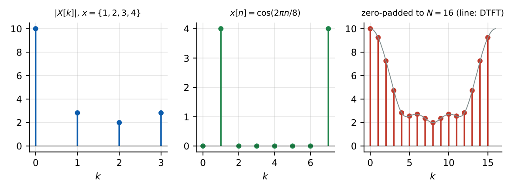

Previous-Year Problem Map: Signals and Systems
In this chapter
Same format as Chapter 28: for each topic the recurring GATE pattern, the fastest method, and two worked original problems in that style (no verbatim official questions). The DFT is not developed in the earlier chapters, so a compact primer is included in Section 29.8.
29.1 Signal properties
Patterns. Periodicity of sums (CT/DT); energy vs power; even/odd integrals; effect of time transformations.
\(x(t)=4\cos2\pi t+3\sin6\pi t\). Fundamental frequencies \(1\) and \(3\) Hz: \(T=1\) s. Power \(=\tfrac{16}2+\tfrac92=12.5\).
\(\displaystyle\int_{-2}^{2}(t^3+t^2+1)\,dt\): the odd term integrates to zero; \(2\int_0^2(t^2+1)dt=2\left(\tfrac83+2\right)=\tfrac{28}3=9.33\).
29.2 LTI systems
Patterns. Classify a given input–output rule; cascade/inverse; causality/stability from \(h\).
\(y[n]=x[n]+0.5y[n-1]\) is cascaded with \(y[n]=x[n]-0.5x[n-1]\). \(H_1=\dfrac1{1-0.5z^{-1}}\), \(H_2=1-0.5z^{-1}\): \(H=1\): the overall system is the identity, \(h[n]=\delta[n]\) (the second is the inverse of the first).
\(y(t)=x(t)\cos(\omega_ct)\) (modulator): linear, time-varying (\(x(t-t_0)\cos\omega_ct\ne x(t-t_0)\cos\omega_c(t-t_0)\)), causal, stable, memoryless.
29.3 Convolution
Patterns. Short DT sequences; rect\(*\)rect; \(e^{-at}u*e^{-bt}u\); use of support/area checks.
\(\{1,2,1\}*\{1,-1,2\}\): \((1+2z+z^2)(1-z+2z^2)=1+z+z^2+3z^3+2z^4\Rightarrow\{1,1,1,3,2\}\); sum \(8=4\times2\) ✓.
\([u(t)-u(t-1)]*e^{-t}u(t)=(1-e^{-t})u(t)-(1-e^{-(t-1)})u(t-1)\); at \(t=2\): \((1-e^{-2})-(1-e^{-1})=e^{-1}-e^{-2}=0.2325\).
29.4 Fourier series
Patterns. Which coefficients vanish; \(c_k\) of \(\cos^2\), \(\sin^2\); Parseval power; DC and RMS of rectified waveforms.
Half-wave rectified \(10\sin\omega t\): DC \(=10/\pi=3.18\) V; RMS \(=10/2=5\) V; \(b_1=5\); \(a_n=-\dfrac{20}{\pi(n^2-1)}\) for even \(n\).
\(x=\cos^2\omega_0t=\tfrac12+\tfrac12\cos2\omega_0t\): \(c_0=\tfrac12\), \(c_{\pm2}=\tfrac14\); power \(\tfrac14+2\cdot\tfrac1{16}=\tfrac38\).
29.5 Fourier transform
Patterns. FT of a modulated pulse; effect of scaling/shift; Parseval energy; duality.
\(x(t)=e^{-|t|}\cos10t\): \(X(\omega)=\tfrac12[X_0(\omega-10)+X_0(\omega+10)]\), \(X_0=\dfrac2{1+\omega^2}\). At \(\omega=0\): \(X(0)=X_0(10)=\dfrac2{101}=0.0198\); at \(\omega=10\): \(\tfrac12\left(2+\tfrac2{401}\right)=1.0025\).
Rectangular pulse of amplitude \(2\), width \(3\): \(E=4\times3=12\); \(\displaystyle\int|X|^2d\omega=2\pi E=75.4\); \(X(0)=6\).
29.6 Sampling
Patterns. Aliased tone frequency; Nyquist rate of combination signals; bandpass sampling; reconstruction of aliased signals.
\(x=\cos2\pi300t+\cos2\pi700t\) sampled at \(1\) kHz and ideally reconstructed: the \(700\) Hz tone aliases to \(|700-1000|=300\) Hz, so both land on \(300\) Hz: \(y(t)=2\cos2\pi300t\).
\(x(t)\) band-limited to \(5\) kHz; \(y(t)=x(t)x(2t)\). \(x(2t)\) has \(10\) kHz; the product has \(5+10=15\) kHz; Nyquist rate \(30\) kHz.
29.7 DTFT
Patterns. \(H(e^{j\Omega})\) of a short FIR or first-order IIR; filter type; DC/Nyquist gain; periodicity.
\(h=\{1,2,1\}\): \(H=e^{-j\Omega}(2+2\cos\Omega)\); \(|H(\pi/2)|=2\), \(|H(\pi)|=0\): low-pass.
\(y[n]=x[n]-x[n-2]\): \(H=1-e^{-j2\Omega}=2j\sin\Omega\,e^{-j\Omega}\), \(|H|=2|\sin\Omega|\): zero at \(0\) and \(\pi\), peak \(2\) at \(\pi/2\): band-pass.
29.8 DFT primer
\(X[k]=\displaystyle\sum_{n=0}^{N-1}x[n]W_N^{nk}\), \(W_N=e^{-j2\pi/N}\); \(x[n]=\dfrac1N\displaystyle\sum_{k=0}^{N-1}X[k]W_N^{-nk}\).
\(X[k]=X(e^{j\Omega})|_{\Omega=2\pi k/N}\) (samples of the DTFT of the length-\(N\) sequence). Frequency resolution \(f_s/N\).
| Property | Statement |
|---|---|
| Periodicity | \(X[k+N]=X[k]\), \(x[n+N]=x[n]\) (implicit) |
| Circular shift | \(x[(n-m)_N]\leftrightarrow W_N^{mk}X[k]\) |
| Circular convolution | \(x\circledast y\leftrightarrow X[k]Y[k]\) |
| Real \(x\) | \(X[N-k]=X^*[k]\) |
| Parseval | \(\sum|x|^2=\frac1N\sum|X|^2\) |
| Linear via circular | need \(N\ge L_x+L_h-1\) (zero-pad) |
| FFT cost (radix-2) | \(\frac N2\log_2N\) complex multiplications vs \(N^2\) |

\(x=\{1,2,3,4\}\): \(X[0]=10\), \(X[1]=1-2j-3+4j=-2+2j\), \(X[2]=1-2+3-4=-2\), \(X[3]=-2-2j\). Parseval: \(\sum|x|^2=30=\tfrac14(100+8+4+8)\) ✓. \(x=\{1,1,1,1\}\to\{4,0,0,0\}\); \(\delta[n]\to\) all ones.
\(\{1,2,3,4\}\circledast\{1,1,0,0\}\) (\(N=4\)): \(y[n]=x[n]+x[n-1]_N=\{1+4,\ 2+1,\ 3+2,\ 4+3\}=\{5,3,5,7\}\). Linear convolution is \(\{1,3,5,7,4\}\): the last sample wraps onto the first (time-domain aliasing) because \(N=4<L_x+L_h-1=5\).
29.9 \(z\)-transform
Patterns. Inverse with the ROC given; initial/final value; stability from ROC; simple \(H(z)\) manipulations.
\(X=\dfrac{1-z^{-1}}{1-0.5z^{-1}}\), \(|z|>0.5\): \(x[n]=(0.5)^nu[n]-(0.5)^{n-1}u[n-1]\); \(x[0]=1\), \(x[1]=0.5-1=-0.5\), \(x[2]=-0.25\), … (a decaying tail).
\(X=\dfrac1{(1-z^{-1})(1-0.5z^{-1})}\): \(x[\infty]=\lim_{z\to1}(1-z^{-1})X=\dfrac1{1-0.5}=2\) (pole at \(1\) is the allowed step pole; the other is inside).
29.10 Digital filters
Patterns. Type of linear-phase FIR; number of taps from window and transition width; bilinear mapping; Butterworth/Chebyshev order.
Analogue spec: \(\alpha_p=1\) dB at \(1\) kHz, \(\alpha_s=60\) dB at \(3\) kHz. Ratio \(\frac{10^6-1}{10^{0.1}-1}=3.86\times10^6\). Butterworth: \(N=\dfrac{\log_{10}(3.86\times10^6)}{2\log_{10}3}=6.90\to7\). Chebyshev: \(N=\dfrac{\cosh^{-1}(1965)}{\cosh^{-1}3}=4.70\to5\).
A symmetric length-\(8\) FIR: Type II; group delay \(3.5\) samples; zero at \(z=-1\); cannot be a high-pass. With a Hamming window and transition \(0.2\pi\) the length is \(\approx33\) (Type I preferred, so use \(33\)).
Time-domain first (period, energy, causal/stable, convolution), then the right transform: periodic \(\to\) Fourier series; aperiodic energy signal \(\to\) FT; sampled \(\to\) DTFT/DFT; difference equation or ROC question \(\to\) \(z\)-transform. Always ask: what are the poles, what is the ROC, and where is the unit circle?